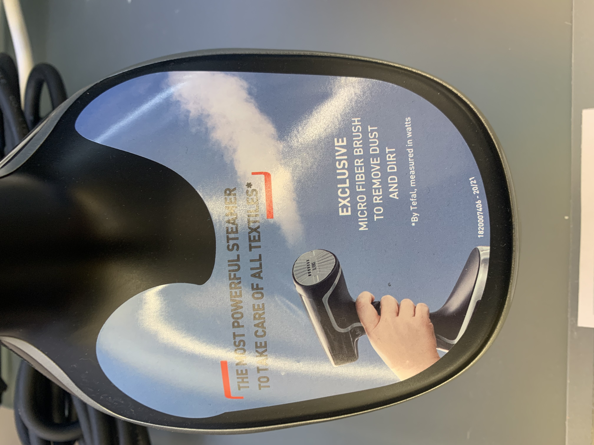

Nowoczesne metody komunikacji
i promocji w sklapach
Naklejki / Wnioski:
- naklejki na produktach nie są estetyczne i pozostawiają ślady,
- naklejki na opakowaniach zaburzają estetykę i nie są do nich dopasowane, na opakowaniach mamy już informacje potrzebne klientowi,
- w obecnej formie proponujemy zrezygnować z naklejek i zastąpić je innymi materiałami : magnesy, ulotki
Best practice konkurencja:

Naklejka na parownicę
.JPG) Naklejka Philips komunikacja promocji
Naklejka Philips komunikacja promocji